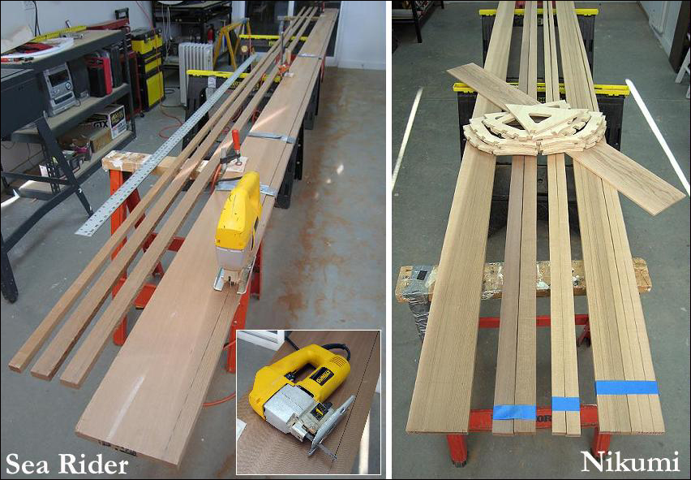

| Stringers | Menu Last Page Next Page |
|

As mentioned earlier, all stringers for the Sea Rider and Nikumi were cut with a jig saw. I was experimenting at the time to see if this simple tool was adequate as a low cost alternative to other types of saws. I drew lines along the full length WRC (cedar) boards before cutting. I didn't use a rip fence. I found this process to be adequate, though slow and requiring good concentration as I walked the saw along the line. This technique is not as accurate as a table or circular saw, but the slight variation isn't noticable on either boat.
|
|